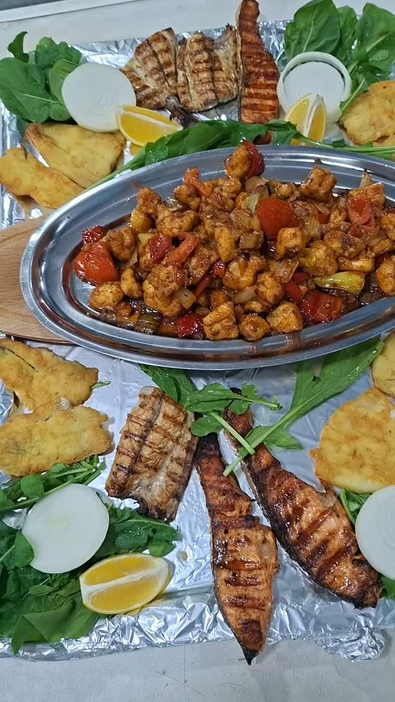

Izgara balıklar
Levrek · Çipura · Somon
YAKUPLU · BEYLİKDÜZÜ
Izgaradan gelen balık, yanına bir salata.
Sevdiklerinizle aynı sofrada buluşun.

DENİZDEN GELEN SOHBETLER
Balık çorbasıyla başlayın, ızgaradan bir balık seçin.
Kalamar, karides ve salatalarla sofrayı tamamlayın.
ÖNCE BİR KAŞIK
Bir tabak balık çorbası.
Ardından sofranın geri kalanı.
GOOGLE YORUMLARI
“Balık çorbası uzun zamandır içtiğim en iyi çorbalardandı, elinize emeğinize sağlık. Kalamar ve yanındaki sos çok lezzetliydi.”
Neslihan Çoban
Google yorumunu aç ↗“Kalamardan karidese, ızgara balıktan servise kadar her şey son derece taze, lezzetli ve özenliydi.”
Madam Seyyah
Google yorumunu aç ↗Google yorumlarından kısa alıntılar. Puan ve yorum sayısı kontrol tarihindeki kaydı yansıtır.
YAKUPLU’DA BULUŞALIM
Güncel çeşitler ve çalışma saatleri için bize ulaşabilirsiniz.